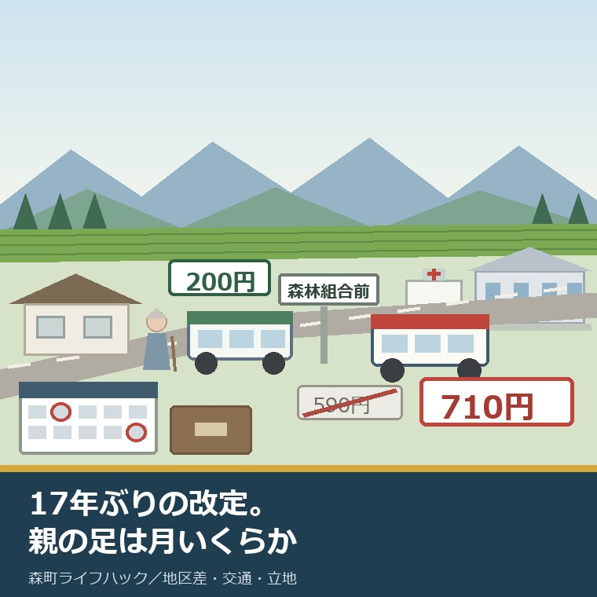
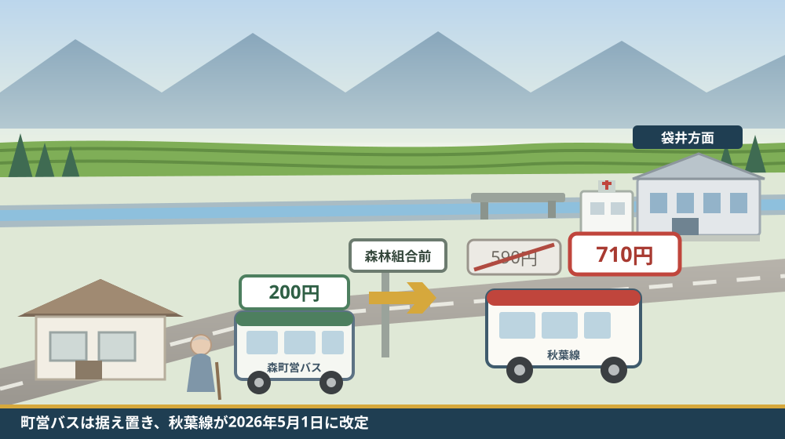
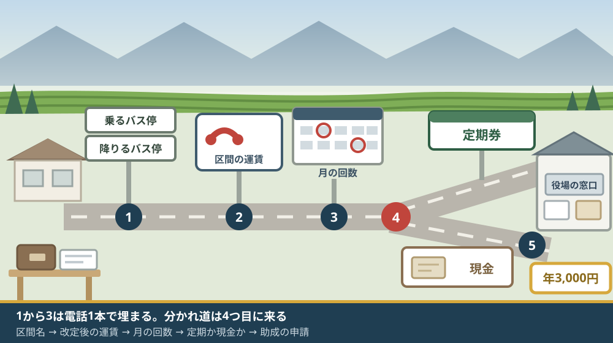

森町のバス運賃が17年ぶり改定｜秋葉線の値上げと親の通院の足

この記事の要点
Q. 森町の実家の親が、袋井の病院までバスで通っています。バス代が上がったと聞きました。いくら上がったのでしょうか。
A. 上がったのは民間の秋葉バスサービスで、森町営バスの大人200円は据え置きです。秋葉バス公式によれば2026年5月1日に平均17.2％の改定を実施し、袋井駅前〜遠州森町は590円から710円になりました。往復240円、週1回の通院なら年12,480円の増です。まず、親が乗る区間名を確かめてください。
静岡県周智郡森町（遠州森町）の実家に、車をやめた親が住んでいる。袋井方面の病院や店へは、バスで出ている。この記事は、そういうご家族に向けて書いています。
2026年に入って、そのバス代が変わりました。変わったのは町営バスではなく、袋井と森町を結ぶ民間の路線バスのほうです。ここを取り違えると、確認する電話番号ごと間違えます。
「森町 バス 運賃」で調べると、二つの別の仕組みが同時に出てきます。町が運行する森町営バスと、秋葉バスサービス株式会社が運行する秋葉線です。今回の改定は後者だけに起きました。
今日は2026年8月21日。改定から3か月半が過ぎ、親の家計にはもう反映されています。けれど、離れて暮らす子の側は、たいてい気づいていません。親は「少し上がったよ」としか言わないからです。
順に、公表されている内容から並べます。数字を並べたあとで、それが月いくらになるかを計算します。
公式情報から確定できること
2026年8月21日時点で、秋葉バスサービス株式会社の公式サイトと森町公式サイトから確認できたことを並べます。出典は記事の末尾に載せています。
一つ目。改定の実施日は2026年5月1日です。秋葉バスサービス公式の運賃改定のお知らせによれば、認可を受けたのは2026年4月22日、実施は2026年5月1日（金）です。
二つ目。改定率は平均17.2％です。同ページは「平均改定率（実施運賃）17.2％」と記載しています。届出上の数値ではなく、実際に払う運賃ベースの平均です。
三つ目。17年ぶりの改定です。同ページは「2009年11月の運賃改定以来17年にわたり運賃を変更することなく」事業を続けてきたとしています。前回の2009年11月から2026年5月までを月数で数えると、16年6か月にあたります。
四つ目。対象は秋葉線と秋葉中遠線の2路線です。同社の路線別時刻表によれば、この2路線の運行区間は「大東・横須賀〜袋井〜森町・気多」です。森町を通るのは、このうち秋葉線です。
五つ目。初乗り運賃は200円です。同ページは「初乗り運賃は200円となります」としています。森町営バスの大人運賃と同じ額です。
六つ目。秋葉線には上限があります。同ページは「秋葉線の実施運賃の上限（頭打ち運賃）は1,100円となります」としています。どれだけ長く乗っても1,100円を超えません。
七つ目。区間ごとの新旧運賃が6つ示されています。同ページの表によれば、袋井駅前〜袋井市民病院が230円から260円、袋井駅前〜山梨が340円から380円、袋井駅前〜遠州森町が590円から710円、袋井駅前〜天竜高校春野校舎が770円から1,100円、袋井駅南口〜浅羽支所入口が290円から320円、袋井駅南口〜新横須賀が530円から630円です。
八つ目。森町の読者に効くのは、このうち袋井駅前〜遠州森町の1行です。590円が710円になりました。差は片道120円です。
九つ目。定期券の扱いが明記されています。同ページは「現在お持ちの定期券は5月1日以降も通用期間終了までそのままご利用いただけます」とし、「通用開始日の7日前から販売をいたします」としています。
十番目。問い合わせ先の電話番号が公表されています。同ページに記載されているのは0538-85-2141です。会社の本社窓口は遠州森町にあります。
十一番目。森町営バスの運賃は改定されていません。森町公式の森町営バス時刻表（令和7年4月1日改正）によれば、大河内線の下島〜森林組合前、吉川線の落合〜元開橋、元開橋〜森町病院は、いずれも大人200円（中学生以上）、小人100円（小学生以下）、幼児100円（就学前児童）です。
十二番目。町営バスの回数乗車券も同じ額のままです。同時刻表によれば、一般用は200円券11枚つづりで2,200円分を2,000円（割引率9.1％）、児童・学生用は100円券20枚つづりで2,000円分を1,500円（割引率25.0％）です。
十三番目。町営バスの時刻表には、秋葉線の接続時刻が刷り込まれています。同時刻表の大河内線の欄によれば、秋葉線（森林組合前発袋井方面）は平日07:22・09:27・13:55・16:33・17:33・18:27の6本、秋葉線（袋井方面から森林組合前着）は07:39・12:17・14:50・15:50・16:32・17:41・19:07の7本です。
十四番目。天浜線の接続時刻も同じ紙に載っています。同時刻表によれば、天浜線（遠州森駅発掛川方面）は08:04・10:03・11:20・14:16・15:47・16:57、天浜線（掛川方面→遠州森駅着）は08:02・09:55・11:18・14:15・15:14・16:07です。
十五番目。森町には運賃を補う助成があります。森町公式の森町公共交通利用券助成事業によれば、対象は75歳以上の町民、または65歳以上であり、かつ、運転経歴証明書の交付を受けた町民です。
十六番目。助成の上限は年3,000円です。同ページによれば、助成額は1人につき1年度（4月1日〜翌年3月31日）当たり上限3,000円です。
十七番目。助成の対象に秋葉バスの定期券が入っています。同ページによれば、対象となる利用券には「秋葉バスサービス株式会社定期券」が挙げられ、販売先は遠州森町本社窓口です。町営バスの回数券・定期券、天竜浜名湖鉄道のシルバーパス・回数券・定期券、静岡県タクシー協会のタクシークーポン券も対象です。
十八番目。申請には期限があります。同ページによれば、申請は公共交通利用券を購入した日から起算して3か月以内で、必要書類は領収証の原本、預金通帳の表紙の写し、65歳から74歳の方は運転経歴証明書の写しです。担当は福祉課地域福祉係（電話0538-85-1800）です。
十九番目。町は秋葉バスの運賃ページへの入口を用意しています。森町公式の「鉄道・民間路線バス・タクシー リンク集」には、秋葉バスサービス株式会社のホームページ、バスロケーションシステム、時刻表、運賃、路線図へのリンクが並んでいます。担当窓口の電話番号は0538-85-6305です。

この絵で描きたかったのは、一本の移動の中に二つの運賃が並んでいるという点です。森林組合前で乗り継ぐと、そこから先だけが改定の対象になります。親が「バス代が上がった」と言うとき、上がっているのは右半分です。
森町の暮らしに置き換えると、この17.2％は月いくらになるか
ここからは、確認した事実を家計の数字に置き換えます。計算は私（大石）が行ったもので、公表された数値ではありません。
正直に書きます。平均17.2％という数字は、森町の家が実際に払う額とはほとんど関係がありません。効くのは、親が乗る一区間の増額だけです。私は不動産の仕事で、総額を必ず一件あたりに割り戻す癖がついています。この改定も、同じやり方で見ないと家計の話になりません。
袋井駅前〜遠州森町を例にします。片道590円が710円、往復では1,180円が1,420円です。1回の外出で240円増えます。
週1回の通院に置き換えます。月4回なら4,720円が5,680円で、月960円の増です。年52回で数えると、61,360円が73,840円になり、年12,480円の増です。
週2回になると、この倍になります。月8回で9,440円が11,360円、月1,920円の増、年に約2万5千円の増です。通院の頻度は本人の状態で決まるので、家族の側では動かせません。
ここで、先ほどの助成の額と並べます。森町公共交通利用券助成事業の上限は1年度あたり3,000円です。週1回の通院で増えた12,480円に対して、3,000円は増えた分の4分の1にとどまります。
もう一つ、区間による差を見ます。公表された6区間を私が計算すると、上がり幅は10.3％から42.9％まで開いています。袋井駅南口〜浅羽支所入口は290円から320円で10.3％、袋井駅前〜遠州森町は20.3％、袋井駅前〜天竜高校春野校舎は770円から1,100円で42.9％です。
遠い区間ほど上がり幅が大きい形になっています。森町は袋井から見て遠い側にあります。平均17.2％という発表を見て「うちも17％くらいか」と思うと、実際の増額を小さく見積もることになります。
山側はさらに条件が重なります。三倉や大河内から袋井へ出る場合、町営バスで森林組合前まで出て、秋葉線に乗り継ぐことになります。森林組合前から袋井方面の秋葉線は平日6本です。本数が少ない区間ほど、1回の外出の重みが大きくなります。
良い点：この改定の、よくできているところ
ここからは、公表されている内容を読んで私が良いと感じた点を書きます。事実ではなく評価です。
一つ目。認可日と実施日を分けて書いている点です。2026年4月22日認可、2026年5月1日実施と並んでいるので、いつ決まっていつ変わったかが後から追えます。制度の話は、日付が二つ揃っていないと検証できません。
二つ目。区間ごとの新旧運賃を並べた表を出している点です。「平均17.2％」だけで済ませず、6区間について前後の金額を書いています。読む側は、自分の区間に近い行を探して当たりを付けられます。
三つ目。手持ちの定期券が期限まで使える点です。「通用期間終了までそのままご利用いただけます」と明記されています。改定の直前に買った人が損をしない形になっています。
四つ目。初乗り200円を据え置いた点です。近距離だけ乗る人の負担は変わりません。森町営バスの大人200円と同額なので、町内で二つの運賃を覚えなくて済みます。
五つ目。頭打ち運賃1,100円を設けた点です。秋葉線は袋井から森町を通って春野の気多まで走る長い路線です。距離に比例させ続ければ、山側の運賃はもっと上がっていたはずです。
六つ目。森町公式のリンク集から、運賃ページへ直接たどれる点です。町のページに「運賃」という項目が独立して置かれています。民間事業者の改定を、町の入口から追える形になっています。
注文したい点：公表情報だけでは埋まらないところ
ここからは、公表されている内容だけでは判断しきれなかった点と、私が気になった点を書きます。一事業者としての注文です。
一つ目。森町内の停留所から袋井市内の病院までの運賃が、公表された6区間の表からは読み取れません。示されているのは袋井駅前・袋井駅南口を起点とした例です。遠州森町から袋井市民病院まで直通で乗ったときの額は、この表では出せませんでした。
二つ目。回数券・小児運賃・障害者割引の扱いが、改定のお知らせページからは確認できません。定期券については書かれていますが、それ以外の券種の記載を見つけられませんでした。ここは電話で確かめる必要があります。
三つ目。助成の上限3,000円が改定に合わせて見直されるかどうかは、森町公式ページからは読み取れませんでした。同ページの更新日は2025年5月1日で、改定より前です。据え置きなのか、見直しの検討中なのかは分かりません。
四つ目。助成の対象が「定期券」である点は、通院の実態と噛み合わないことがあります。週1回しか乗らない方は、定期券を買うと割高になります。現金で払う通院は、助成の外に置かれています。
五つ目。遠い区間ほど上がり幅が大きい設計は、山側の集落に重く効きます。三倉・大河内から袋井へ出る家では、乗り継ぎの先が長い区間になります。もっとも移動の代替が少ない地区に、もっとも大きい増額が乗る形です。
六つ目。ここは家族側への注文です。「バス代が上がったらしい」で会話を終わらせないでください。親は金額を言いません。往復の額と月の回数を聞き取って、月いくらかを出すところまでやってください。

対案・結論：今日、親のバス代について確かめられること
結論を急がないと決めたうえで、今日から動ける順番を書きます。順番はイラストのとおりです。
| 順番 | 確かめること | 確認先 |
|---|---|---|
| 1 | 親が乗るバス停と降りるバス停の名前 | 親本人への電話。停留所の柱に書かれた名前をそのまま聞く |
| 2 | その区間の改定後の運賃 | 秋葉バスサービス株式会社 0538-85-2141、または同社サイトの運賃ページ |
| 3 | 月に何回乗っているか | 診察券・お薬手帳の日付。買い物の回数は親に数えてもらう |
| 4 | 定期券と現金のどちらが安いか | 2と3を掛け合わせて自分で計算。定期券は遠州森町本社窓口 |
| 5 | 年3,000円の助成に当てはまるか | 森町 福祉課地域福祉係 0538-85-1800 |
| 6 | 町営バス・地域タクシーとの組み合わせ | 町の交通担当窓口 0538-85-6305 |
1から3までは、電話1本で終わります。ここまでで「月いくら」が出ます。この数字が出ていない状態で、定期券を買うかどうかを考えても答えは出ません。
4は計算だけです。往復運賃×月の回数と、定期券の1か月分を並べます。週1回の通院なら、たいてい現金のほうが安く付きます。
5は年齢の条件があります。75歳以上、または65歳以上で運転経歴証明書を持っていること。どちらにも当てはまらない場合、この助成は使えません。
6は、地区によって答えが変わります。免許を返したあとに残る足は、森町では地区ごとに形が違います。その全体像は親が車を返した日に残る足を、町営バスと一宮・園田の地域タクシーで整理した記事にまとめました。
山側の家であれば、移動の代替が少ないぶん判断が変わります。三倉・天方から出るときの現実は、距離ではなく便数で決まります。その見方は三倉・天方で距離より移動の代替を見る記事に書きました。
鉄道を使う手もあります。ただし遠州森駅から袋井駅へ鉄道で行くには、掛川で乗り換えることになります。天浜線の本数と接続の実際は天浜線の駅が近いという言葉を本数と接続から見直した記事で数えました。
家族に残す記録
ここからは、確認した内容を紙1枚に残すための項目です。次に同じことを調べ直さないためのものです。
書き留めるのは、乗車するバス停の名前、降車するバス停の名前、改定後の片道運賃、月の乗車回数、往復×回数で出した月額です。この5つで家計の話ができます。
あわせて、定期券の有無と通用期間の終わり、助成を申請した年度、領収証の保管場所、秋葉バスサービスの電話番号（0538-85-2141）、福祉課地域福祉係の電話番号（0538-85-1800）を並べておきます。
実家の名義、境界、農地、道路まで含めて順に整理したい方は、ふじがおか実家カルテの森町相談窓口もご利用ください。住所が分かれば、建物と敷地のどちらについても、確認する順番を整理できます。
大石の視点
ここからは、私（大石浩之）の個人の考えです。公的な事実とは分けてお読みください。この件について、私自身が森町の窓口で聞き取った体験があるわけではありません。以下は公表資料を読んだうえでの私の見方です。
私は、運賃の改定を不動産の話の一部だと考えています。親が車をやめた家では、駅からの距離ではなくバス停からの距離が効き始めます。その距離の値段が、17年ぶりに変わりました。
数字は必ず割り戻します。平均17.2％では商売になりません。片道120円、往復240円、月960円、年12,480円。この並べ方でないと、家族は動きません。私が査定の場でやっているのも、これと同じ作業です。
年12,480円という額を、私はこう見ています。空き家の火災保険や年に数回の草刈りを外注したときの費用と、桁が近い。「バス代」と呼ぶと小さく聞こえますが、家の維持費と同じ棚に載る額です。
ここは正直に書きます。この値上げが高いか安いかは、私には判断できません。16年6か月据え置いた側にも、運転士の確保と燃料代という事情があります。据え置きを続けて路線ごと無くなるより、上がって残るほうがいい。そう思う一方で、年12,480円を払う側の顔も浮かびます。この二つを私はまだ整理できていません。
それでも一つだけ言い切ります。親のバス代は「月いくら」で管理してください。1回いくらで考えている限り、この改定の影響は家族の目に入りません。
実務で見えているのは、移動の値段が上がると、親は外出の回数を先に減らすということです。通院を月2回から1回に減らす。買い物をまとめる。家計は守られますが、暮らしのほうが縮みます。
森町の側から見れば、この改定は町の落ち度ではありません。民間事業者が17年ぶりに判断したことです。その上で、一事業者としては、助成の上限3,000円が改定の前に決まった額のままである点だけ、見直しの検討を望みます。金額の大小より、改定に連動する仕組みかどうかのほうが後々効きます。
もう一つ、買い手や借り手も同じ地図を見ます。森町の家を検討する人にとって、袋井まで片道710円という数字は判断材料になります。その家がバス停から何分かは、これから今まで以上に効きます。実家の立地を確かめる手順は実家の立地を、地図ではなく暮らしの動線から確認する記事に書きました。
結論が保留のままでも、確認済みの事実が一つ増えたなら、それは前進です。区間名が分かった。月額が出た。どちらも、次の判断を軽くします。
まとめ
- 秋葉バスサービス公式によれば、同社は2026年4月22日に認可を受け、2026年5月1日に運賃改定を実施した（2026年8月21日確認）
- 平均改定率（実施運賃）は17.2％で、同社は「2009年11月の運賃改定以来17年にわたり運賃を変更することなく」事業を続けてきたとしている
- 対象は秋葉線と秋葉中遠線の2路線で、運行区間は「大東・横須賀〜袋井〜森町・気多」
- 初乗り運賃は200円、秋葉線の実施運賃の上限（頭打ち運賃）は1,100円
- 公表された区間例では、袋井駅前〜遠州森町が590円から710円、袋井駅前〜袋井市民病院が230円から260円、袋井駅前〜天竜高校春野校舎が770円から1,100円
- 現在持っている定期券は、5月1日以降も通用期間終了までそのまま使える
- 森町営バス（大河内線・吉川線）の運賃は今回の改定の対象外で、令和7年4月1日改正の時刻表のとおり大人200円・小人100円・幼児100円のまま
- 森町営バス時刻表には秋葉線の接続時刻が載っており、森林組合前発の袋井方面は平日6本、袋井方面から森林組合前着は平日7本
- 森町公共交通利用券助成事業は、75歳以上の町民または65歳以上で運転経歴証明書の交付を受けた町民に、1人1年度当たり上限3,000円を助成する
- 助成の対象には秋葉バスサービス株式会社定期券（遠州森町本社窓口で販売）が含まれるが、回数券や現金払いの通院は対象外
- 申請期限は購入日から起算して3か月以内で、領収証の原本と預金通帳の表紙の写しが要る（65歳から74歳の方は運転経歴証明書の写しも）
- 私の計算では、袋井駅前〜遠州森町の往復は1,180円から1,420円へ240円の増、週1回の通院で月960円・年12,480円の増になる
- 私の計算では、公表6区間の上がり幅は10.3％から42.9％まで開き、遠州森町は20.3％で平均を上回る
よくある質問
Q1. 森町のバス運賃は、いつ、どれくらい上がりましたか。
A1. 秋葉バスサービス公式によれば、同社は2026年4月22日に認可を受け、2026年5月1日に運賃改定を実施しました。平均改定率（実施運賃）は17.2％、初乗り運賃は200円、秋葉線の頭打ち運賃は1,100円です。一方、森町営バスの大河内線・吉川線は令和7年4月1日改正の時刻表のとおり大人200円のままで、今回の改定の対象ではありません。
Q2. 森町から袋井駅までのバス運賃は、いくらになりましたか。
A2. 秋葉バスサービス公式が示した区間例によれば、袋井駅前〜遠州森町は590円から710円になりました。片道120円、往復240円の増です。ただし公表されているのは6区間の例で、森町内の他のバス停から袋井市内の病院までの運賃は、この表からは読み取れません。区間名を決めてから同社（0538-85-2141）へ確認してください。
Q3. 上がった分を補う助成は、森町にありますか。
A3. 森町公式の森町公共交通利用券助成事業は、75歳以上の町民または65歳以上で運転経歴証明書の交付を受けた町民を対象に、1人1年度あたり上限3,000円を助成します。対象には秋葉バスサービス株式会社定期券が含まれます。ただし対象は定期券であり、回数券や現金払いの通院は対象外です。担当は福祉課地域福祉係（0538-85-1800）です。
最後に一つだけ。ここに書いた運賃、改定率、実施日、助成の条件は、いずれも2026年8月21日時点で公表されている内容です。森町内の停留所を起点とした個別の区間運賃、回数券・小児運賃・障害者割引の改定後の扱い、助成の上限3,000円が今後見直されるかどうかは、公表資料からは確認できていません。動く前に、必ず秋葉バスサービス株式会社（0538-85-2141）と、森町の福祉課地域福祉係（0538-85-1800）へご確認ください。
参考にした公式情報
- 運賃改定のお知らせ／秋葉バスサービス株式会社（認可日が2026年4月22日、実施日が2026年5月1日（金）であること、「平均改定率（実施運賃）17.2％」と記載されていること、「2009年11月の運賃改定以来17年にわたり運賃を変更することなく」事業を継続してきたと記載されていること、「初乗り運賃は200円となります。」「秋葉線の実施運賃の上限（頭打ち運賃）は1,100円となります。」と記載されていること、区間例として袋井駅前〜袋井市民病院230円→260円・袋井駅前〜山梨340円→380円・袋井駅前〜遠州森町590円→710円・袋井駅前〜天竜高校春野校舎770円→1,100円・袋井駅南口〜浅羽支所入口290円→320円・袋井駅南口〜新横須賀530円→630円が示されていること、「現在お持ちの定期券は5月1日以降も通用期間終了までそのままご利用いただけます。」「通用開始日の7日前から販売をいたします。」と記載されていること、問い合わせ先が0538-85-2141であることを2026年8月21日に確認）
- 路線別時刻表（2026年4月1日から）／秋葉バスサービス株式会社（掲載路線が秋葉中遠線・秋葉線、袋井駅・中東遠総合医療センター線、磐田線、小國神社線であること、秋葉中遠線・秋葉線の運行区間が「大東・横須賀〜袋井〜森町・気多」と記載されていること、平日用と土曜・日祝用の時刻表PDFが別に掲載されていること、小國神社線には別途運行カレンダーが用意されていることを2026年8月21日に確認）
- 森町営バス時刻表 大河内線・吉川線（令和7年4月1日改正）／静岡県森町（大河内線の下島〜森林組合前、吉川線の落合〜元開橋および元開橋〜森町病院の運賃がいずれも大人200円（中学生以上）・小人100円（小学生以下）・幼児100円（就学前児童）であること、回数乗車券が一般用200円券11枚つづり2,200円分を2,000円（割引率9.1％）・児童・学生用100円券20枚つづり2,000円分を1,500円（割引率25.0％）であること、フリー降車区間が「下島」〜「森林組合前」間と「元開橋」〜「落合」間であること、予約が必要な便の締切が9時までの便は前日17時まで・9時以降17時30分までの便は当日1時間前まで・17時30分以降の便は当日16時30分までであること、大河内線の欄に秋葉線（森林組合前発袋井方面）07:22・09:27・13:55・16:33・17:33・18:27と秋葉線（袋井方面から森林組合前着）07:39・12:17・14:50・15:50・16:32・17:41・19:07が接続時刻として併記されていること、天浜線（遠州森駅発掛川方面）08:04・10:03・11:20・14:16・15:47・16:57および（掛川方面→遠州森駅着）08:02・09:55・11:18・14:15・15:14・16:07が併記されていることを2026年8月21日に確認）
- 森町公共交通利用券助成事業／静岡県森町（対象が75歳以上の町民、または65歳以上であり、かつ、運転経歴証明書の交付を受けた町民であること、助成額が「1人につき1年度（4月1日〜翌年3月31日）当たり 上限3,000円」であること、対象となる利用券に森町営バス回数乗車券（販売価格2,000円）・森町営バス定期乗車券・天竜浜名湖鉄道シルバーパス・天竜浜名湖鉄道普通回数乗車券・天竜浜名湖鉄道定期券・「秋葉バスサービス株式会社定期券」・静岡県タクシー協会タクシークーポン券（販売価格3,000円）が挙げられていること、秋葉バスサービス株式会社定期券の販売先が遠州森町本社窓口であること、申請が「公共交通利用券を購入した日から起算して3か月以内」であること、必要書類が領収証原本・預金通帳表紙の写し・65歳から74歳の場合は運転経歴証明書の写し・本人以外の口座指定時は委任状であること、担当が福祉課地域福祉係（電話0538-85-1800）であることを2026年8月21日に確認。ページ更新日 2025年05月01日）
- 鉄道・民間路線バス・タクシー リンク集／静岡県森町（鉄道として天竜浜名湖鉄道、民間路線バス等として秋葉バスサービス株式会社、タクシーとして静岡県タクシー協会が掲載されていること、秋葉バスサービス株式会社についてホームページ・バスロケーションシステム・時刻表・運賃・路線図の各リンクが並んでいること、担当窓口の所在地が〒437-0293 静岡県周智郡森町森2101-1、電話番号が0538-85-6305であることを2026年8月21日に確認。ページ更新日 2024年05月07日）
- 森町営バスのご案内／静岡県森町（町営バスが大河内線と吉川線の2路線であること、「どちらの路線も事前の予約が必要な便があります」とされていること、「町営バス時刻表（令和7年4月1日現在）」「予約バスの予約手順について」「町営バス定期乗車券 販売場所・購入金額一覧」がPDFで掲載されていること、担当窓口の電話番号が0538-85-6305であることを2026年8月21日に確認。ページ更新日 2024年03月31日）

最終確認日：2026-08-21 ／ 本記事は公表情報と執筆者の見解を分けて記載しています。森町内の停留所を起点とした個別の区間運賃、回数券・小児運賃・障害者割引の改定後の扱い、森町公共交通利用券助成事業の上限3,000円が今後見直されるかどうかは公表資料から確認できていません。運賃・運行条件は変更されることがあります。動く前に、必ず秋葉バスサービス株式会社および森町の福祉課地域福祉係へご確認ください。